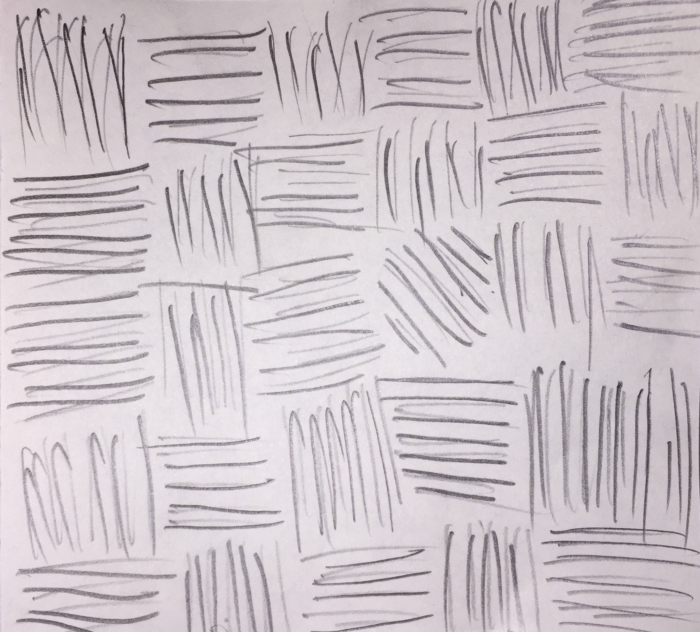
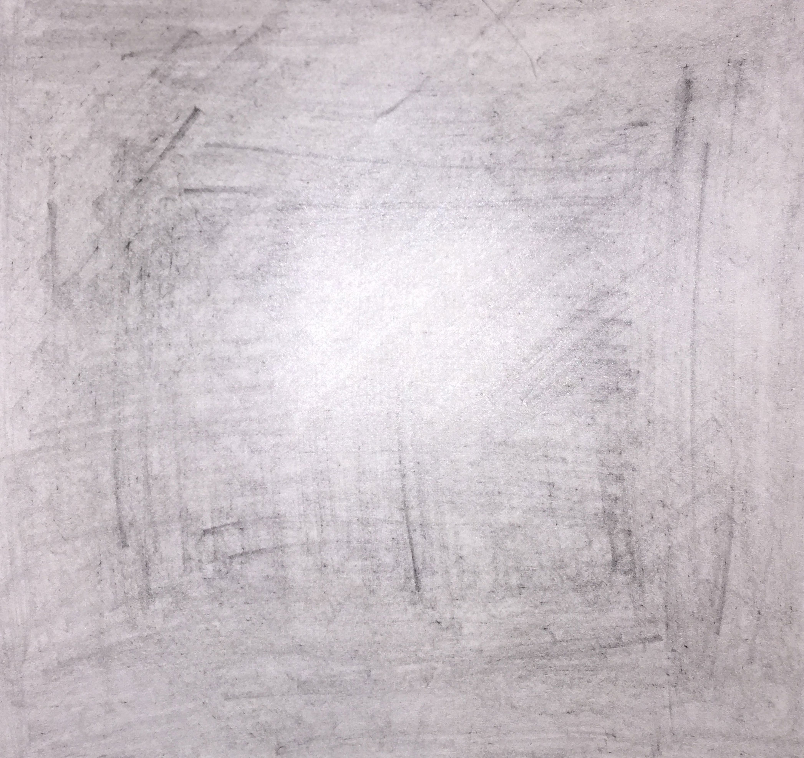

Instruction Art
Instructions:
1. Grab a square piece of paper. If you don't have a square piece of paper, make one.
2. Grab a lead pencil.
3. Sharpen the lead pencil to have a strong tip. Repeat this step as many times as necessary throughout the process.
4. Pressing firmly against the paper, sketch lines back and forth continuously so as to cover an entire 2x2 inch section of the paper.
5. Change the direction of the lines and again, sketch lines back and forth continuously so as to cover an entire 2x2 inch section of the paper in this new direction.
6. Repeat steps 5 and 6 going in different directions until the entire paper is covered darkly with lead.
7. Feel the paper both in the back and front.

This is the first example that I created following my instructions.

This is the second example.

Third example.
